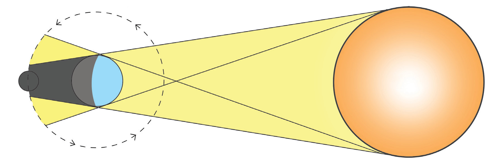
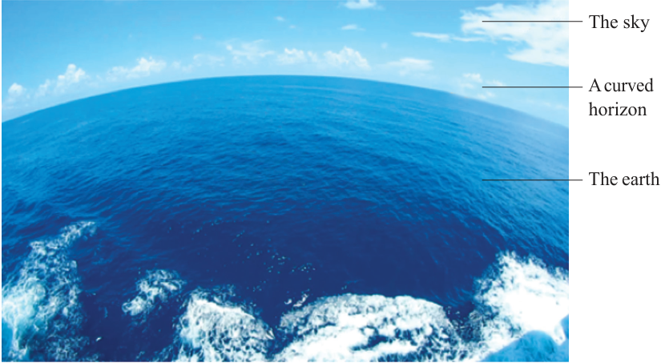

Lunar eclipse
When light from the Sun is obstructed, a circular shadow is observable. For example, during the eclipse of the moon, the shadow of the Earth on the moon appears spherical (Figure 2.8).

MoonEarthsunEarth’s curved horizon
The Earth appears to have a curved horizon when viewed from a high cliff, a plane or a high building. The earth’s curved horizon widens as the observer’s altitude increases until it becomes circular (Figure 2.9).

The sky
A curved horizon
The earth
18